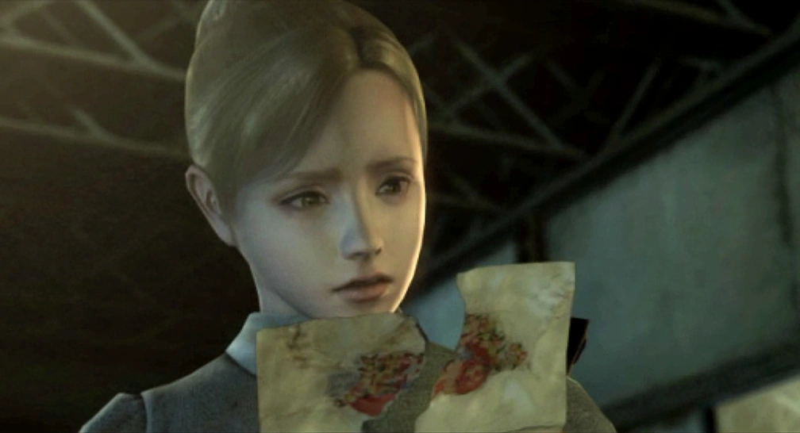
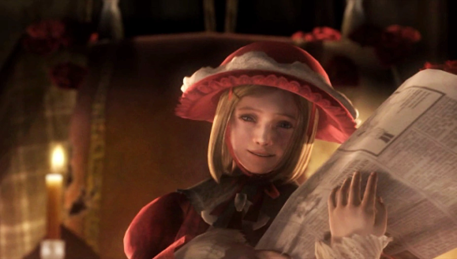

En 2006, Rule of Rose a déclenché une tempête médiatique en Europe avant même sa sortie. Des parlementaires italiens l'ont qualifié de « jeu pédophile », des associations de protection de l'enfance ont réclamé son interdiction, des journaux ont relayé des descriptions de scènes qui n'existaient pas dans le jeu. Le titre a finalement été retiré de la distribution européenne — victime d'une lecture paniquée qui n'avait rien lu du tout.
Ce qu'on avait en réalité entre les mains était l'un des jeux les plus délicats et les plus courageux jamais produits sur le sujet des abus infantiles — non pas comme spectacle, mais comme archéologie psychologique. Rule of Rose ne montre pas la violence explicitement. Il en reconstitue la structure, la logique, les mécanismes de perpétuation. Il la fait jouer au sens propre du terme.
Ce qui suit est une tentative de lire ce jeu comme il mérite de l'être : sérieusement, avec les outils qu'il se donne lui-même — ceux du conte de fées, de la mémoire fragmentée, et de l'horreur psychologique.
I. L'orphelinat comme microcosme — la hiérarchie des enfants
Le Rose Garden Orphanage de 1930 est régi par une institution inventée par les enfants eux-mêmes : le Red Crayon Aristocrat Club. La Princesse de la Rose Rouge émet des décrets appelés « Rules of Rose » — des ordres que les autres membres doivent obéir sous peine de punition. On distribue des rangs, des titres, des décorations. On organise des cérémonies. On offre des cadeaux mensuels. Tout cela dans le plus grand sérieux.
Cette construction n'est pas anodine. Les enfants ont reproduit — en miniature, entre eux — la structure exacte de la société adulte qui les opprime. Ils n'ont pas inventé la cruauté : ils l'ont copiée. L'orphelinat est dirigé par M. Hoffman, un directeur incompétent et prédateur qui abuse sexuellement de Diana et de Clara. Ce que les enfants font entre eux est le reflet direct de ce que les adultes leur font.
Le Red Crayon Aristocrat Club — la hiérarchie
Ce que le jeu montre avec une acuité troublante, c'est que la violence horizontale entre enfants n'est jamais séparée de la violence verticale des adultes. Diana, qui est la plus cruelle des Aristocrates, est aussi celle qui subit les pires abus de la part de Hoffman. Sa violence envers les autres est la seule sortie qu'on lui laisse. Le jeu ne l'excuse pas — il l'explique, ce qui est différent et bien plus difficile.
Les enfants de Rule of Rose ne sont pas des monstres. Ils sont le produit d'un environnement où personne ne leur a appris qu'il existait une autre façon d'être ensemble.
II. Jennifer — la mémoire comme labyrinthe
Le dispositif narratif de Rule of Rose est essentiel pour comprendre ce que le jeu dit. Nous ne jouons pas Jennifer enfant en 1930 — nous jouons Jennifer adulte, à 19 ans, qui reconstitue ses souvenirs d'enfance refoulés. Tout ce que nous voyons est filtré par une mémoire traumatique, fragmentée, partiellement fictionnalisée. L'airship n'existe pas réellement. Le Club des Aristocrates tel qu'il nous apparaît est une reconstruction. Certaines scènes sont des interprétations que l'enfant Jennifer s'est données pour survivre psychologiquement à ce qu'elle a vécu.
Cette structure narrative a une conséquence décisive : nous ne savons jamais exactement ce qui s'est passé. Et c'est précisément le point. La mémoire traumatique ne fonctionne pas comme un enregistrement. Elle fonctionne comme un collage — des fragments réels, des reconstructions, des métaphores que le psychisme a substituées aux événements trop douloureux pour être rappelés directement.

Jennifer adulte.
Le fait que le joueur soit Jennifer adulte qui se souvient crée une complicité particulière. On ne regarde pas la souffrance d'une enfant de l'extérieur — on la traverse avec elle, dans le désordre et le flou de sa mémoire. La forme ludique de Rule of Rose est inséparable de son propos : jouer une reconstitution mémorielle, c'est faire l'expérience de la façon dont le trauma résiste à être raconté de façon linéaire.
Brown — l'amour comme cible
Au cœur de l'histoire de Jennifer se trouve Brown, son chien. Un chiot trouvé en juillet 1930, gardé en secret dans une remise, aimé avec une intensité que l'enfant n'a trouvée nulle part ailleurs depuis la mort de ses parents dans un accident d'airship.
Brown est le seul être dans cet orphelinat qui aime Jennifer sans conditions, sans hiérarchie, sans demander de contrepartie. Et c'est précisément pour cette raison qu'il devient la cible de Wendy. Non pas parce que Wendy est sadique — mais parce qu'elle comprend instinctivement que Brown est là où Jennifer est vulnérable. Tuer ce que quelqu'un aime est le mode d'action de ceux qui n'ont aucun autre pouvoir. Wendy, solitaire et malade, enfermée dans sa chambre la plupart du temps, n'a accès qu'à ce levier-là.
La mort de Brown — montrée indirectement, à travers un sac ensanglanté que des enfants battent à coups de bâton — est l'une des scènes les plus dures du jeu précisément parce qu'elle est pudique. Elle ne cherche pas le choc ; elle cherche la vérité. Et la vérité, c'est que cela arrive. Que des enfants font ça. Que le pire n'est pas toujours spectaculaire.
III. Wendy — la princesse solitaire
Wendy est le personnage le plus mal compris de Rule of Rose, et donc probablement le plus important. Elle est présentée d'abord comme la antagoniste — la Princesse de la Rose Rouge, celle qui émet l'ordre de tuer Brown, celle qui déclenche indirectement le massacre final. Et pourtant.
Wendy est une enfant malade, alitée la plupart du temps, profondément seule. Elle n'a pas d'amis — elle a des sujets. La distinction est cruciale. Le Red Crayon Aristocrat Club n'est pas un projet social : c'est une stratégie de survie d'une enfant fragile dans un environnement hostile. En se proclamant Princesse, en contrôlant le récit du « Stray Dog » qui effraie les autres, elle se protège des brimades qu'une enfant solitaire et maladive subirait inévitablement.
Jennifer est la première — et peut-être la seule — personne que Wendy a vraiment aimée. Pas comme une sujette. Comme une amie. Comme quelqu'un à qui appartient un serment : « everlasting, true love, I am yours » — la Rule of Rose originelle, celle que Jennifer a brisée le jour où elle a trouvé Brown.

Wendy, la Princesse de la Rose Rouge
Ce que Wendy ne peut pas tolérer, c'est d'être remplacée par un chien. Non pas par jalousie ordinaire — mais parce que Brown représente la preuve que Jennifer peut se passer d'elle. Que l'amour de Wendy n'est pas nécessaire. Pour une enfant dont tout le pouvoir repose sur l'illusion d'être indispensable, c'est une menace existentielle.
La fin du jeu — la bonne fin — nous montre Wendy dehors, seule, humiliée. Jennifer sort la rejoindre. Elles se font la révérence. S'embrassent. Puis Jennifer referme le portail et s'en va. Et Wendy baisse la tête.
Ce geste final n'est pas de la cruauté. C'est de la survie. Jennifer choisit de se souvenir de Wendy — de ne pas l'effacer — mais de ne pas rester. C'est la seule chose juste qu'elle puisse faire. Aimer quelqu'un qui vous a fait du mal ne signifie pas rester à sa portée.
IV. Les livres de contes — la fiction comme système de défense
L'un des dispositifs les plus brillants du jeu est la structure en livres de contes illustrés. Chaque chapitre est encadré par un conte — naïf, enfantin, légèrement inquiétant — qui raconte les événements du jeu sous une forme déguisée. Ces contes sont écrits par Gregory, le père de Joshua (le fils mort dont Jennifer est le substitut), devenu fou de deuil.
Mais le jeu nous révèle à la fin que c'est Jennifer qui lui a raconté ces histoires. C'est elle qui a transformé ses traumatismes en contes. C'est elle qui a habillé la violence en fable, la cruauté en récit de princesses et de monstres, la mort de Brown en histoire de chien errant.
Cette révélation transforme tout ce qu'on a vu. Le langage du conte de fées n'est pas une stylisation esthétique imposée par les développeurs : c'est le langage que Jennifer s'est inventé pour survivre à ce qu'elle a vécu. Les enfants traduisent souvent l'insupportable en récit symbolique. La fiction n'est pas un mensonge — c'est une façon de porter le vrai sans en être écrasée.
Jennifer n'a pas fantasmé son enfance. Elle l'a mise en mots d'enfant — les seuls qu'elle avait à disposition à l'âge où tout s'est passé.
V. Ce que le jeu dit que nous ne voulions pas entendre
Rule of Rose dit des choses que peu de fictions osent formuler clairement. Il dit que les enfants peuvent se faire du mal entre eux de façon organisée, systématique, presque institutionnelle. Il dit que les adultes censés les protéger peuvent être leurs premiers prédateurs. Il dit que les victimes ne sont pas pures — qu'elles peuvent devenir à leur tour des bourreaux, sans que cela les disqualifie de toute compassion.
Il dit que l'amour peut coexister avec la trahison. Que Wendy aimait Jennifer et a quand même fait tuer Brown. Que Jennifer aimait Wendy et ne peut quand même pas rester. Que Diana est à la fois la plus violente des Aristocrates et celle qui a le plus de raisons de l'être.
Tout cela est inconfortable. Tout cela est vrai. Et c'est précisément pour cette raison qu'on a préféré l'interdire plutôt que de l'écouter.
Le prochain article abordera Alice : Madness Returns — comment un pays des merveilles corrompu devient la carte d'un trauma infantile, et ce que le Dollmaker dit de la façon dont on efface les enfants.